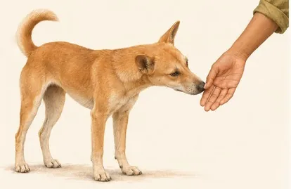
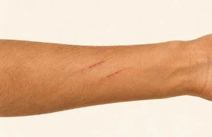
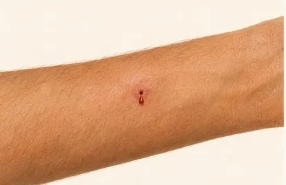
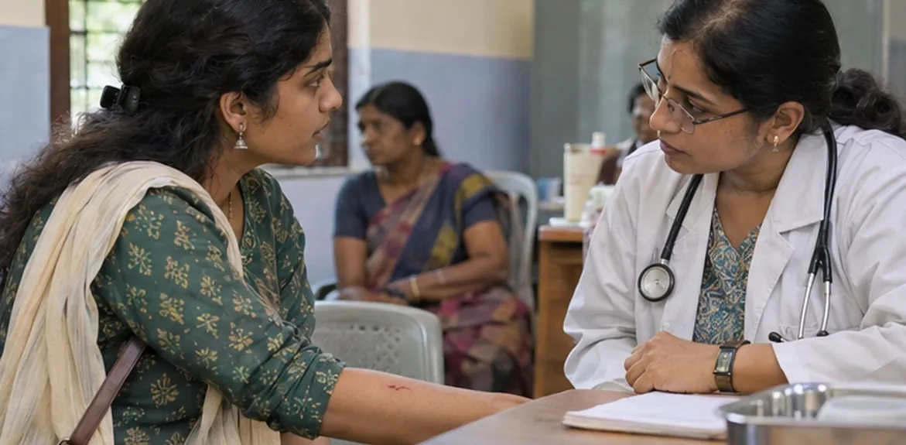
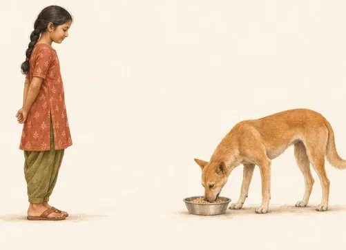

Rabies kills tens of thousands of people every year, most of them children in Asia and Africa. Once its signs appear it is almost always fatal. Yet it is 100% preventable: by washing a bite at once, by treating people quickly after a bite, and above all by vaccinating dogs.
People for Animals, from the World Health Organization (WHO), the United Nations agency for health. Every fact links to the WHO page it comes from.
Wash it for 15 minutes. Wash the wound at once with soap or detergent, and flush it with plenty of running water for about 15 minutes. No soap? Water alone. WHO calls wound washing the most effective first aid against rabies.
Then an antiseptic. About 15 minutes after washing, put on an iodine-based antiseptic, such as povidone-iodine, or another that kills viruses, if you have one.
Put nothing else on it, and do not bandage it. No chilli powder, plant juice, acid or lime. Do not cover the wound with a dressing or a bandage, and a doctor should not stitch it straight away.
See a doctor the same day. Go to a hospital or health centre that gives the anti-rabies vaccine. Say what animal it was, where on the body, and when. Do not wait to see whether the animal falls ill.
Note the animal; keep it safe, never harm it. If it can be done safely, have the animal confined and watched for 10 days, and note what it looked like, where it was and what happened. Tell your local body or the nearest PFA unit. Do not beat, chase or kill it.
Doctors sort every contact with an animal that may have rabies into one of three categories. The category decides the treatment.

Category I
Touching or feeding an animal; licks on unbroken skin.
No exposure. Wash the skin. No treatment is needed.

Category II
Nibbling of bare skin; small scratches or grazes that do not bleed.
Vaccinate. Wash the wound and start the rabies vaccine at once.

Category III
One or more bites or scratches that break the skin; saliva on the eyes, mouth, nose or a wound (a lick on broken skin counts); any direct contact with a bat.
Vaccinate and protect. Wash the wound, start the vaccine at once, and get rabies immunoglobulin or monoclonal antibodies into and around the wound.
This care after a contact is called PEP, post-exposure prophylaxis: treatment given after contact, before any illness, so that the virus never takes hold. Category II and III both need the vaccine.
Treatment after a bite, and why every dose matters

Start at once, finish the course. The vaccine is given as a series of injections over a week to a month. Among people who died despite treatment, the main reason was coming late; stopping before the last dose is another.
The vaccine cannot give you rabies. Every human rabies vaccine is inactivated (contains no live virus) and is tested for strength, safety and sterility.
Safe in pregnancy and breastfeeding. The vaccine and immunoglobulin are safe and work. They should never be withheld from a pregnant or breastfeeding woman, and no baby has been infected through pregnancy or breast milk.
No single shot lasts for life. Even if you were vaccinated before, a new bite needs treatment again (a shorter course; see below).
Changing hospital or vaccine brand partway through is acceptable if it cannot be avoided: carry on with the schedule; do not start again.
Watching the animal for 10 days is not a reason to wait. Where rabies is common, treatment starts at once, and the animal is watched for 10 days where possible: an infected animal usually shows signs or dies within 1 to 7 days. If it stays healthy, the doctor may turn the course into protection for the future (pre-exposure vaccination).
The doctor also checks your tetanus vaccination, gives antibiotics if the wound looks infected, and gives painkillers if needed.
For doctors and nurses: WHO schedules and doses
The vaccine after a bite (Category II and III), for someone never vaccinated before
Regimen
Doses
Takes
Intradermal (ID, into the skin), WHO 1-week
2 sites on day 0, day 3 and day 7
7 days
Intramuscular (IM, into the muscle), Essen
1 dose on day 0, 3, 7, and between day 14 and 28
14 to 28 days
Intramuscular, Zagreb
2 doses on day 0 (one in each arm), 1 on day 7, 1 on day 21
21 days
WHO recommends the intradermal route: it uses less vaccine and fewer doses, cutting cost by 60 to 80% with the same safety and protection, and fewer visits mean more people finish.
Rabies immunoglobulin (RIG) and monoclonal antibodies
For Category III, and for Category II in a person whose immune system is badly weakened. Not for anyone vaccinated before, and not after day 7 of the vaccine course.
The most: 40 IU (international units) per kg of body weight of horse (equine) RIG, or 20 IU per kg of human RIG. Given once, at the start or as soon as possible after.
Infiltrated into and around the wound, as much as can be put there safely. For large or many wounds, diluted with saline to cover them all. Never in the same syringe or at the same site as the vaccine.
A skin test before horse RIG is not recommended. Watch the patient for some minutes afterwards, with anaphylaxis treatment at hand.
Where RIG is short, it goes first to: many bites; deep wounds; bites on the head, neck, hands or genitals; badly weakened immunity; bites from an animal confirmed or likely to have rabies; and contact with bats. The vaccine is never held back because RIG is not available.
Someone vaccinated before (a full course after an earlier bite, or before any bite)
Within 3 months of finishing a full course: no new course is needed.
After 3 months: 1 intradermal site on day 0 and day 3, or 4 intradermal sites on day 0, or 1 intramuscular dose on day 0 and day 3. No RIG.
Weakened immunity
For Category II or III in someone whose immunity is badly weakened and not under good care: wash and disinfect the wound well, give a full course with RIG even if vaccinated before, check antibodies 2 to 4 weeks after the first dose (and give another dose if they are low), and ask an infectious disease specialist. People living with HIV (human immunodeficiency virus) who are well treated are not counted as immunocompromised.
The wound
Do not stitch it. If a large wound must be closed, RIG goes in first, and the stitches are loose so the wound can bleed and drain; stitching later gives a better result.
Rabies is a virus that passes from animals to people (a zoonosis). It spreads in saliva: through bites and scratches, and through licks on wounds, grazes, broken skin, or the lining of the mouth, nose or eyes. Tears and nerve tissue may carry it too. It is not in blood or faeces.
Any mammal can carry it. Dogs cause up to 99% of human cases. Cats, bats, mongooses, jackals, foxes and wolves can pass it on as well. Monkey bites rarely do. Horses and donkeys may bite when rabid.
Cattle and buffalo can pass it on through their saliva: take care when examining a sick animal that is drooling.
Rats and mice do not normally carry rabies, so a rat bite usually needs no rabies treatment. Clean it like any bite and ask a doctor about tetanus.
Milk and meat: no one is known to have caught rabies from milk (breast milk included) or cooked meat. Still, never drink milk from, butcher or eat an animal that had rabies; bury or burn the body if possible, on a vet’s advice. People who handle such a body risk infection through broken skin.
Person to person: never confirmed, except through organ transplants. Anyone caring for a patient should keep saliva off their skin and wash their hands well.
Bats: just seeing a bat does not pass on rabies, but a bat bite can leave no visible mark. Never touch a bat; one on the ground, unable to fly, is more likely to be sick. In the Americas, where dog rabies is largely controlled, bats are now the main source.
Changed behaviourBiting people, animals or objects for no reason; restless, or unusually dull
UnsteadyWalking poorly, then paralysis
A changed voiceA hoarse bark or growl, or no bark at all
DroolingToo much saliva, or froth at the mouth
A dog with these signs usually dies within 10 days of them starting. Keep away from it, keep others away, and call your local body or the nearest PFA unit. Where rabies is common, as in India, any dog bite is treated as a possible risk, however healthy the dog looks.
The wait: usually 2 to 3 months, but from a week to a year. The virus travels along the nerves to the spinal cord and the brain; signs begin when it gets there. Bites on the head, neck or fingers, which are full of nerves, bring them on sooner. So does a deep bite, many bites, or a lot of virus.
First: fever, and pain, tingling, pricking, itching or burning where the wound was.
Then, quickly: anxiety, confusion, agitation, hallucinations, sleeplessness; fear of water, with spasms even at the sight of it; fear of moving air; sensitivity to noise and bright light; difficulty swallowing; weakness or paralysis.
Furious rabies, the most common form: overactive, excited behaviour, fear of water and of draughts. Death follows within days, from heart and breathing failure.
Paralytic rabies, about 1 case in 5: slower, with paralysis spreading from the bite, then coma and death. It is often mistaken for other illness, so many cases go unrecorded.
There is no cure once signs start, and no test can show the virus in a person before then. About 15 survivors are on record; nearly all had some vaccine beforehand, and all were left severely disabled.
Care at the end: a quiet, dimly lit room away from noise and cold air; medicines to ease spasms, pain and fear; fluids through a drip. WHO advises against aggressive experimental treatments (such as the Milwaukee protocol), which do not reliably save lives and may cause harm. The patient’s dignity and the family’s time with them come first.
Children are most at risk: they play with animals, are more often bitten on the face and neck, and may not tell anyone about a bite or a scratch. Children aged 5 to 14 are frequent victims. Ask children often, and believe them.
A dog you know
Handle puppies gently and often, so they grow up at ease with people and learn not to bite.
Learn your dog’s signals, train it, and know when and how to approach it.
Vaccinate it against rabies every year.
A dog you do not know

If a dog runs at you: stand still and stay quiet, and let it sniff you. When it leaves, walk away slowly.
Never tease, chase or throw things at a dog. Do not hit, kick or shout at it.
Leave dogs alone while they eat, sleep, or care for puppies, and avoid dogs that are tied up, fenced in, or behaving strangely.
Vaccinating dogs, puppies included, is the most cost-effective way to prevent rabies in people: it stops the virus at its source. Vaccinating about 70% of the dogs in an area, in campaigns repeated every year, protects the whole dog population and breaks the chain of infection.
Culling free-roaming dogs does not control rabies. Vaccination does.
Treating people after bites, on its own, will never end rabies, and its cost only grows. Vaccinating dogs ends it.
Mass dog vaccination works when it reaches free-roaming dogs too, with strong health and veterinary services and stocks of dog vaccine.
In India: under the Animal Birth Control (ABC) Rules, 2023, your municipality must sterilise and vaccinate community dogs against rabies; residents and feeders are not responsible for it. A yearly rabies vaccine is required to register a pet dog with the municipality. Rabies is a notifiable disease (one that must be reported to the authorities) under the Prevention and Control of Infectious and Contagious Diseases in Animals Act, 2009. What the law says
PrEP, pre-exposure prophylaxis, is rabies vaccination before any contact. It makes treatment after a bite simpler and shorter. WHO recommends it for:
vets and animal health workers, animal disease control staff and wildlife rangers;
laboratory staff working with the live virus;
people living in remote areas with a lot of rabies, far from treatment, and travellers to such areas.
PrEP does not replace care after a bite: anyone vaccinated in advance who is then bitten still needs wound washing and the short course for those vaccinated before.
For doctors and nurses: PrEP schedules and boosters
Regimen
Doses
Takes
Intradermal (ID)
2 sites on day 0 and 2 sites on day 7
2 visits, 7 days
Intramuscular (IM)
1 dose on day 0 and 1 on day 7
2 visits, 7 days
One visit, when there is no other way
2 intradermal sites, or 1 intramuscular dose, on day 0; the second visit as soon as possible
1 day
A one-visit course may protect a healthy person for up to a year. Bitten before the second dose: a full course after the bite, with RIG for a severe exposure. Routine boosters are only for people working with large amounts of live virus (laboratories, vaccine plants): an antibody test every 1 to 2 years, and a booster (1 site, ID or IM) if the level is below 0.5 IU per ml.
Good vaccines exist; reaching people is the problem
Rabies vaccines for people are highly effective, safe and well tolerated. Every vaccine used should meet WHO’s standards: poor-quality vaccines have failed people in several countries.
Three human rabies vaccines were WHO prequalified in 2024: RABIVAX-S (Serum Institute of India), VaxiRab N (Zydus Lifesciences) and VERORAB (Sanofi Pasteur).
More than 29 million people receive a rabies vaccine every year.
A course after a bite cost US$108 on average in 2018, before travel and lost pay: a heavy burden for families earning US$1 to 2 a day. Rabies costs the world about US$8.6 billion a year, in lives, livelihoods, medical care and trauma.
Rabies is a neglected tropical disease: it falls mostly on poor, rural people, for whom the vaccine, immunoglobulin and antibodies are often out of reach.
WHO, with the Food and Agriculture Organization (FAO) and the World Organisation for Animal Health (WOAH), works through One Health, animal and human health together: mass dog vaccination, treatment within reach, trained health workers, better reporting, and teaching communities about bites.
The goal, Zero by 30, is in WHO’s 2021 to 2030 roadmap for neglected tropical diseases. Since 2021, WHO and Gavi, the Vaccine Alliance, have worked to make human rabies vaccine easier to get.
It can be done. WHO has confirmed that Mexico, Bhutan (4 September 2026) and Chile (14 September 2026) have ended dog-borne human rabies as a public health problem. 17 countries, among them Germany, Sweden and Portugal, have declared themselves free of the rabies virus to WOAH.
India has its own National Action Plan for Dog Mediated Rabies Elimination by 2030.
World Rabies Day is 28 September, the day Louis Pasteur, who made the first rabies vaccine, died.
About the numbers: WHO’s latest count, from its 2021 Global Health Estimates, is 44203 deaths a year; its longer-standing estimate is about 59000 a year in over 150 countries, 95% of them in Africa and Asia. Both are known to be too low: many deaths are never diagnosed or reported.
General information, not medical advice: after any bite or scratch, see a doctor. Prepared by People for Animals from the WHO pages above, read on 22 November 2026; the India lines are from PFA’s What the law says. The photographs are illustrative scenes, not real cases; the drawings are PFA’s own.